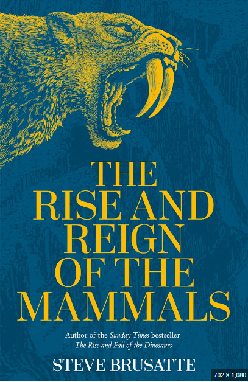

This section contains the best non fictional books available on the market
The Ship beneath the Ice
Mensun Bound
The Ship Beneath the Ice chronicles two dramatic expeditions to what Shackleton called “the most hostile sea on Earth.”
Bound experienced failure and despair in his attempts to locate the wreck, and, like Shackleton before him,
very nearly found his vessel frozen in ice.
The Psychology of stupidity
Jean-Francios Marmion
In The Psychology of Stupidity, leading psychologists and thinkers–including a Nobel Prize winner and
bestselling authors–will show you why smart people sometimes believe in utter nonsense,
how our brains cause us to make the wrong decisions, or how Internet overstimulation make us dumber.

The Rise and Reign of Mammals
Steve Brusatte
This book is about the beginning with the earliest days of our lineage some 325 million years ago,
Brusatte charts how mammals survived the asteroid that claimed the dinosaurs and made the world their own,
becoming the astonishingly diverse range of animals that dominate today's Earth.
Queen of our Times
Robert Hardman
It is a portrait of a world leader who remains as intriguing today as the day she came to the Throne at age twenty-five.
With peerless access to members of the Royal Family, staff, friends, and royal records, Queen of Our Times brings
fresh insights and scholarship to the modern royal story.
Hiroshima
John Hersey
Hiroshima is a 1946 book by American author John Hersey. It tells the stories of six survivors of the atomic bomb dropped on Hiroshima.
It is regarded as one of the earliest examples of New Journalism, in which the story-telling techniques of fiction are adapted to non-fiction reporting.